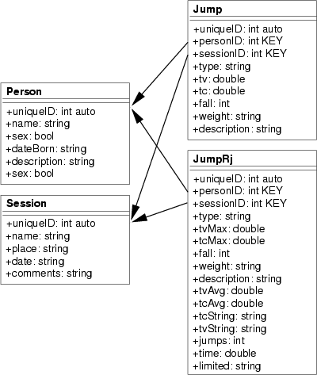

Next: 5 Resultados obtenidos Up: 4 Arquitectura del Sistema Previous: 2 Sistema de medición


Next: 5 Resultados
obtenidos Up: 4
Arquitectura del Sistema Previous: 2
Sistema de medición
El software de gestión trabaja con tres
entidades: saltos, personas y sesiones. Toda la información se
almacena en una base de datos, cuya estructura simplificada se
muestra en la figura
 .
Los datos de un salto se leen de Chronopic a través del puerto
serie y se pueden asociar a un saltador y al día que lo ha
realizado (sesión). Así, ya que no es necesario ir
anotando los resultados en un papel para luego introducirlos en el
ordenador para realizar los cálculos, disminuyendo el error
accidental, que, a diferencia del sistemático, es variable y
depende de la persona[15].
.
Los datos de un salto se leen de Chronopic a través del puerto
serie y se pueden asociar a un saltador y al día que lo ha
realizado (sesión). Así, ya que no es necesario ir
anotando los resultados en un papel para luego introducirlos en el
ordenador para realizar los cálculos, disminuyendo el error
accidental, que, a diferencia del sistemático, es variable y
depende de la persona[15].
|
 |
Figure: Esquema simplificado de la estructura de la base de datos
Los tipos de saltos que están actualmente soportados son los del test de Bosco[14]: SJ, SJ(con carga), CMJ, DJ, ABK y saltos reactivos RJ.
El software de gestión se ha diseñado para correr sobre Mono[16] (versión 1.0.5), una implementación libre de la plataforma .NET de Microsoft, que está disponible para los sistemas operativos Linux, Mac OS y Windows, y las arquitecturas x86, PowerPC y Sparc.
La mayor parte del código está escrita en C#, salvo el módulo de comunicación serie para el acceso a Chronopic, que está en C.
La implementación de la base de datos se ha hecho con SQLite[17], una librería en C que incorpora un motor SQL. Las estadísticas se realizan mediante consultas SQL contra la base de datos. Como ejemplo, para obtener los 3 mejores valores del índice de potencia en RJ descrito por Aguado durante la sessión 7, la consulta sería:
SELECT person.name, person.sex, jumpRj.jumps, jumpRj.time, jumpRj.tvAvg, (9.81*9.81 * tvavg*jumps * time / ( 4 * jumps * (time - tvavg*jumps) ) ) AS potency FROM jumpRj, person WHERE type == 'RJ' AND jumpRj.sessionID == 7 AND jumpRj.personID == person.uniqueID ORDER BY potency DESC LIMIT 3;
Para la interfaz gráfica del programa, se utiliza GTK#[19] y el diseño se ha realizado con la aplicación Glade[20], lo que permite que sea totalmente independiente del código.
Otras características son: soporte para la internacionalización con Gettext y dibujo de gráficas con el paquete Nplot[18].


Next: 5 Resultados
obtenidos Up: 4
Arquitectura del Sistema Previous: 2
Sistema de medición